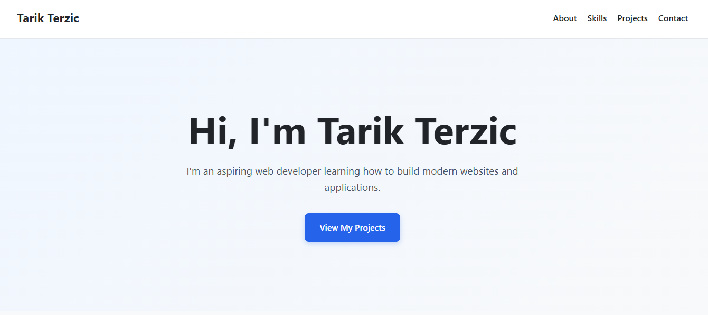
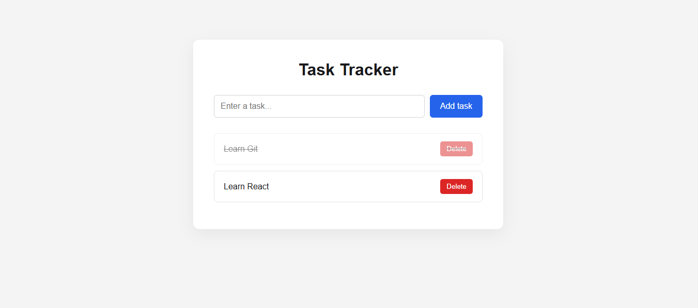

Hi, I'm Tarik Terzic
I'm a web developer focused on building modern, responsive websites and applications.
I build projects with HTML, CSS, and JavaScript while continuously expanding my skills.
View My ProjectsAbout Me
I'm a web developer who enjoys learning by building real projects. I'm focused on developing a strong foundation in front-end development and gradually expanding my knowledge of modern web technologies.
So far, I've built projects including a task tracker and a weather application using HTML, CSS, JavaScript, APIs, and local storage.
I'm always looking for opportunities to learn something new, improve my code, and build better projects.
Skills
Projects

Personal Portfolio Website
A responsive personal portfolio website built to showcase my projects, skills, and progress as a web developer.
HTML • CSS

Task Tracker
A task management application where users can add, complete, and delete tasks. Tasks are saved using browser local storage so they remain available after refreshing the page.
HTML • CSS • JavaScript • localStorage
Contact Me
Want to get in touch? Let's connect and talk.
Email: your@email.com
GitHub LinkedIn